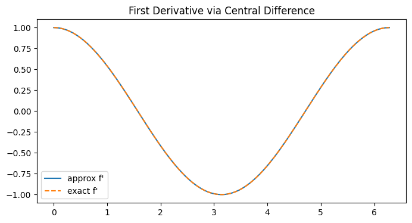
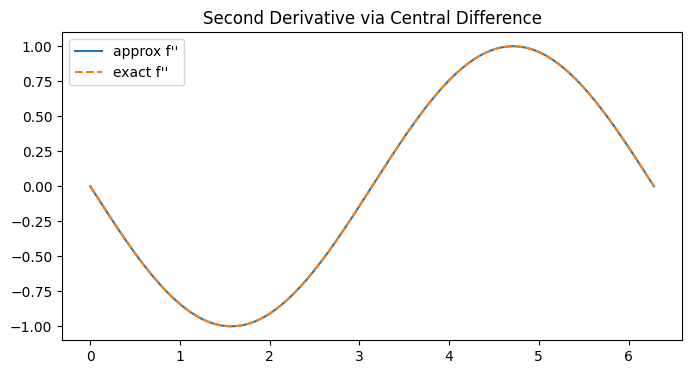
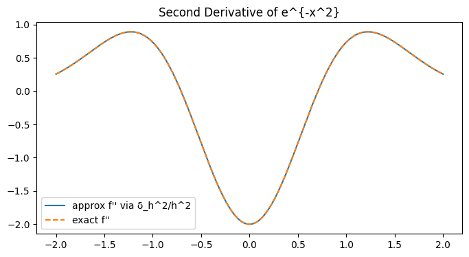

Let
Iterating
so
Polynomials of degree
one has
so
Whenever the
Define the summation operator
Telescoping gives
so
From Taylor expansion one obtains the classic finite-difference approximations
hence
For
with the remainder
We take
Then
Next
so
Continue
and
hence
This agrees with the binomial expansion
For the falling‐factorial basis with
we have
so
verifying
and
confirming
import math
from math import comb
def forward_difference(f, x, h=1.0, n=1):
return sum((-1)**(n-k) * comb(n, k) * f(x + k*h) for k in range(n + 1))
def forward_difference_function(f, h=1.0, n=1):
return lambda x: forward_difference(f, x, h, n)
def falling_factorial(x, k, h=1.0):
prod = 1.0
for i in range(k):
prod *= (x - i*h)
return prod
def sum_operator(g, x, h=1.0, n=1):
return sum(g(x + j*h) for j in range(n))
# --------------------------------------------------------------------------
# Demonstrations
# --------------------------------------------------------------------------
# 1. Verify that Δ_h^3 x^2 ≡ 0
h_demo = 0.5
p = lambda x: x**2
test_points = [0, 1, 2, 3]
delta3_vals = [forward_difference(p, x, h_demo, n=3) for x in test_points]
print("Δ_h^3 p(x) for p(x)=x^2 with h=0.5:", delta3_vals)
# 2. First‑derivative approximation for f(x)=sin(x) at x0=1
f = math.sin
f_prime_exact = math.cos
x0 = 1.0
hs = [2**(-k) for k in range(1, 11)] # 2^{-1}, …, 2^{-10}
errors = []
for h in hs:
approx = forward_difference(f, x0, h, n=1) / h
errors.append(abs(approx - f_prime_exact(x0)))
print("\nForward‑difference derivative error for sin at x=1:")
for h, err in zip(hs, errors):
print(f"h={h:<9.1e} |error|={err:.3e}")
# 3. Summation operator & telescoping check
g = lambda x: x**2
a = 0.0
n_sum = 5
h_sum = 1.0
S_val = sum_operator(g, a, h_sum, n_sum)
delta_S = forward_difference_function(lambda y: sum_operator(g, y, h_sum, n_sum), h_sum, n=1)(a)
boundary = g(a + n_sum*h_sum) - g(a)
print(f"\nS_h g(a) with g(x)=x^2, a={a}, n={n_sum}: {S_val}")
print(f"Δ_h S_h g(a): {delta_S} (should equal g(a+nh)-g(a)={boundary})")
Δ_h^3 p(x) for p(x)=x^2 with h=0.5: [0.0, 0.0, 0.0, 0.0]
Forward-difference derivative error for sin at x=1:
h=5.0e-01 |error|=2.283e-01
h=2.5e-01 |error|=1.102e-01
h=1.2e-01 |error|=5.393e-02
h=6.2e-02 |error|=2.664e-02
h=3.1e-02 |error|=1.323e-02
h=1.6e-02 |error|=6.596e-03
h=7.8e-03 |error|=3.292e-03
h=3.9e-03 |error|=1.645e-03
h=2.0e-03 |error|=8.221e-04
h=9.8e-04 |error|=4.110e-04
S_h g(a) with g(x)=x^2, a=0.0, n=5: 30.0
Δ_h S_h g(a): 25.0 (should equal g(a+nh)-g(a)=25.0)
Backward differences approximate derivatives while looking only at past mesh points—a key feature for stable implicit time-stepping. On a uniform mesh
As
Repeated application gives the
which follows from the binomial identity
Working in the rising-factorial basis
one finds
The matrix of
For a function
often called the backward Newton series.
from __future__ import annotations
import math
from typing import Callable
Number = float | int
def nabla(f: Callable[[Number], Number],
x: Number,
h: Number = 1.0) -> Number:
return f(x) - f(x - h)
def nabla_n(f: Callable[[Number], Number],
x: Number,
h: Number = 1.0,
n: int = 1) -> Number:
return sum(((-1) ** k) * math.comb(n, k) * f(x - (n - k) * h)
for k in range(n + 1))
def rising_factorial(x: Number,
k: int,
h: Number = 1.0) -> Number:
out = 1.0
for i in range(k):
out *= x + i * h
return out
def backward_newton_series(f: Callable[[Number], Number],
x: Number,
x0: Number,
h: Number = 1.0,
terms: int = 10) -> Number:
total = 0.0
for k in range(terms):
coeff = nabla_n(f, x0, h, k) / (math.factorial(k) * h**k)
total += coeff * rising_factorial(x - x0, k, h)
return total
We take
The first backward difference is
At
so the second backward difference at
Compute next
hence
and the third difference at
confirming
Alternatively, by the binomial formula
In the rising‐factorial basis for
we have at
so
verifying
Finally, the backward Newton series at
The series is
Since
as required.
On a uniform grid with spacing
so that the finite‐difference approximation to the first derivative reads
More generally, higher‐order central differences arise by iterating
where
gives a canonical approximation for
By Taylor expansion around
so central‐difference formulas achieve second‐order accuracy for both first and second derivatives, outperforming forward or backward schemes of the same stencil width. In operator terms,
On a uniform grid with spacing
Iterating
We begin by Taylor‐expanding
Now form the first central difference by subtracting term‐by‐term:
Dividing by
For the second central difference, expand
Adding these two gives
and subtracting
Finally divide by
import numpy as np
from math import comb
def delta_h(f, x, h):
return f(x + 0.5*h) - f(x - 0.5*h)
def central_derivative(f, x, h):
return delta_h(f, x, h) / h
def delta_h2(f, x, h):
return f(x + h) - 2*f(x) + f(x - h)
def central_second_derivative(f, x, h):
return delta_h2(f, x, h) / h**2
def delta_h_n(f, x, h, n):
# if n is odd, offsets are half‐integers; if even, integers
total = 0
for k in range(n+1):
shift = (n/2 - k) * h
total += ((-1)**k) * comb(n, k) * f(x + shift)
return total
# Example usage
def test():
import matplotlib.pyplot as plt
# test function
f = np.sin
x0 = 1.23
h = 1e-3
# scalar test
print("f'(x) approx:", central_derivative(f, x0, h))
print("f'(x) exact :", np.cos(x0))
print("f''(x) approx:", central_second_derivative(f, x0, h))
print("f''(x) exact :", -np.sin(x0))
# vectorized test on a grid
xs = np.linspace(0, 2*np.pi, 200)
d1 = central_derivative(f, xs, 0.01)
d2 = central_second_derivative(f, xs, 0.01)
plt.figure(figsize=(8,4))
plt.plot(xs, d1, label="approx f'")
plt.plot(xs, np.cos(xs), '--', label="exact f'")
plt.legend()
plt.title("First Derivative via Central Difference")
plt.show()
plt.figure(figsize=(8,4))
plt.plot(xs, d2, label="approx f''")
plt.plot(xs, -np.sin(xs), '--', label="exact f''")
plt.legend()
plt.title("Second Derivative via Central Difference")
plt.show()


Let
satisfies by the binomial theorem
so that
In the falling‐factorial basis
so
linking difference operators to umbral calculus and the binomial transform.
By Taylor expanding each term,
one deduces
so
yield even‐order approximations with second‐order error:
These operators underpin high‐order finite‐difference schemes and discrete Newton series,
and form the backbone of Richardson and Romberg extrapolation, where combining
import numpy as np
from math import comb
def delta_h(f, x, h):
return f(x + 0.5*h) - f(x - 0.5*h)
def central_derivative(f, x, h):
return delta_h(f, x, h) / h
def delta_h2(f, x, h):
return f(x + h) - 2*f(x) + f(x - h)
def central_second_derivative(f, x, h):
return delta_h2(f, x, h) / h**2
def delta_h_n(f, x, h, n):
total = 0
for k in range(n+1):
shift = (n/2 - k) * h
total += ((-1)**k) * comb(n, k) * f(x + shift)
return total
def forward_difference(f, x, h):
return f(x + h) - f(x)
def forward_difference_n(f, x, h, n):
total = 0
for k in range(n+1):
total += ((-1)**(n-k)) * comb(n, k) * f(x + k*h)
return total
def symmetric_even_difference(f, x, h, n):
return delta_h_n(f, x, h, 2*n)
# ─── Example usage with f(x) = exp(−x²) ─────────────────────────────────────
def test():
import matplotlib.pyplot as plt
# New test function and its known derivatives
f = lambda x: np.exp(-x**2)
f1 = lambda x: -2*x * np.exp(-x**2) # f'(x)
f2 = lambda x: (4*x**2 - 2) * np.exp(-x**2) # f''(x)
x0, h = 0.5, 1e-3
# First derivative: forward vs central vs exact
fd1 = forward_difference(f, x0, h) / h
cd1 = central_derivative(f, x0, h)
ex1 = f1(x0)
print(f"Forward Δ_h f/h = {fd1:.6e}")
print(f"Central δ_h f/h = {cd1:.6e}")
print(f"Exact f' = {ex1:.6e}\n")
# Second derivative: Δ_h^2/h^2 vs δ_h^2/h^2 vs exact
fd2 = forward_difference_n(f, x0, h, 2) / h**2
cd2 = central_second_derivative(f, x0, h)
ex2 = f2(x0)
print(f"Forward Δ_h^2/h^2 = {fd2:.6e}")
print(f"Central δ_h^2/h^2 = {cd2:.6e}")
print(f"Exact f'' = {ex2:.6e}\n")
# Symmetric 4th‐order approx of f^(4)(x) (should be 12x(1 - x^2) e^{-x^2})
# but we just check the workflow:
sym4 = symmetric_even_difference(f, x0, h, 2) / h**4
print(f"Symmetric δ_h^4/h^4 = {sym4:.6e}")
# Plot comparison on a grid
xs = np.linspace(-2, 2, 400)
approx = np.array([central_second_derivative(f, xi, 0.01) for xi in xs])
exact = f2(xs)
plt.figure(figsize=(8,4))
plt.plot(xs, approx, label="approx f'' via δ_h^2/h^2")
plt.plot(xs, exact, '--', label="exact f''")
plt.title("Second Derivative of e^{-x^2}")
plt.legend()
plt.show()

We take
The first forward difference is
Next
so the second difference at
Continuing,
hence
Finally
so
confirming
The binomial expansion
agrees with the stepwise differences.
In the falling‐factorial basis
so at
and
verifying
and
By Taylor expansion one shows
matching our value
Finally, the symmetric second difference
and
recovers the true second derivative
Monte Carlo methods rest on the idea that we can approximate expectations or integrals by drawing random samples from an underlying distribution and averaging. Suppose we wish to estimate
where
is unbiased, i.e.\
The Central Limit Theorem further ensures that, if
so that the estimation error decays like
The simplest case is crude Monte Carlo, where
Then
remains unbiased but can dramatically reduce
Since
one can estimate the standard error on the fly via the sample variance
giving an approximate
Monitoring the decay of
The Law of Large Numbers (LLN) formalizes the intuitive idea that the sample average converges to the true expected value as the sample size grows. It comes in two primary flavors: the Weak Law of Large Numbers (WLLN), concerning convergence in probability, and the Strong Law of Large Numbers (SLLN), concerning almost sure convergence. Both theorems underpin statistical estimation and the foundations of probability theory by guaranteeing stability of averages under repeated trials.
Let
The Weak Law asserts that for any
i.e.\
The Strong Law strengthens this to almost‐sure convergence:
or
The LLN justifies using the sample mean as a consistent estimator of the population mean in statistics: as
for i.i.d.\ samples
For the Monte Carlo estimator
with
The variance of
Consequently, the mean squared error (MSE) equals the variance,
In practical terms, halving the root‐mean‐square error requires quadrupling
By the Central Limit Theorem, if
so for large
This justifies confidence intervals of width
where
Almost–sure convergence at the
For non‐i.i.d.\ or dependent samples (e.g.\ Markov chains), analogous results hold under mixing or martingale conditions, replacing
where
Estimating the derivative of a function or an expectation when only noisy or black‐box evaluations are available is a foundational problem in Monte Carlo optimization and simulation. Suppose we wish to approximate the gradient of
with respect to a parameter vector
Write
so that
A Monte Carlo estimator draws independent
This estimator is unbiased and applies even when
Alternatively, one can approximate each partial derivative by perturbing
Then under mild regularity
so a Monte Carlo gradient estimator is
As
SPSA uses only two evaluations per gradient estimate regardless of dimension, making it popular in high‐dimensional settings.
We wish to estimate
at
For the score‐function estimator we use
Draw
Then
The estimator is
Here the true gradient is
For the Gaussian‐smoothed estimator set
Then
The smoothed estimator is
Again the exact gradient is
With SPSA in one dimension we draw a single Rademacher
so
recovering the exact gradient
These three randomized methods—score‐function, Gaussian smoothing, and SPSA—all trade off bias and variance differently but can approximate
Suppose
and
we may differentiate under the integral sign (assuming sufficient smoothness and integrability) to obtain the unbiased pathwise derivative:
By drawing
we obtain an unbiased Monte Carlo estimator with variance often much lower than the score‐function approach, because it does not multiply by the typically large term
The efficiency of the pathwise estimator hinges on the smoothness of
so that
and the estimator becomes
Under mild conditions (e.g.\
We estimate
At
The likelihood‐ratio method, also known as the score‐function estimator, provides a way to compute gradients of expectations even when the integrand is not differentiable in the random variable. For a parameterized density
Under mild conditions permitting interchange of differentiation and integration,
An unbiased Monte Carlo estimator then draws
which converges almost surely to
A major drawback is the high variance of
Choosing
We estimate
so that
Take
Then
Multiplying,
and averaging gives
Thus with
To reduce variance we introduce the baseline
Here
and averaging yields
This is much closer to
Suppose we wish to estimate the sensitivity
but cannot differentiate under the expectation analytically. A simple approach is the forward‐difference Monte Carlo estimator: draw
By Taylor’s theorem, the bias of this estimator is
so it is
which reduces the bias to
The variance of
so
and a minimal mean squared error
which is slower than the
Infinitesimal Perturbation Analysis (IPA) estimates the derivative
by differentiating the sample‐path performance function
so one obtains an unbiased estimator by simulating
Key to IPA is that randomness in sample paths does not break differentiability: events such as queue emptiness or barrier crossings must occur on sets of probability zero where the path function is non‐smooth. Under non‐atomicity and regularity (no simultaneous discontinuities), IPA yields exact gradients at zero bias.
IPA’s validity hinges on two main conditions:
ensuring
Under these,
with
Often
Consider a discrete‐time system
where
Here
Suppose an output or cost is defined at the final time
Then its gradient follows by
In continuous‐time settings, with
the sensitivity
and the gradient of a terminal cost
Infinitesimal Perturbation Analysis typically assumes that the system’s evolution is piecewise deterministic: between random event times the state
or the corresponding discrete‐time update, with
Equally crucial is the differentiability of the event‐time functions
Under a transversality condition—namely that
Given these regularity conditions, one invokes dominated‐convergence or Leibniz‐integral theorems to interchange differentiation and expectation:
A sufficient condition is the existence of an integrable majorant
which holds when the vector‐field derivatives, jump‐map derivatives, and event‐time derivatives are all uniformly bounded in expectation. Under these assumptions the IPA estimator
is unbiased, i.e.\
We illustrate IPA on a simple discrete‐time model
with random inputs
Unrolling the recursion gives
so analytically
With sample‐path differentiation we track sensitivities
Since
gives
Thus the IPA estimator for this sample is
which at (for example)
Because
so simulating many i.i.d.\ copies
from __future__ import annotations
import math
from typing import Callable, Tuple, Literal
import numpy as np
ArrayLike = np.ndarray # shorthand type alias
__all__ = [
# integration + variance reduction
"monte_carlo",
"importance_sampling",
"control_variate",
"stratified_sampling",
"confint",
# gradient estimators
"score_function_gradient",
"pathwise_gradient",
"gaussian_smoothing_gradient",
"spsa_gradient",
"finite_difference_forward",
"finite_difference_central",
"ipa_discrete_time",
]
###############################################################################
# Basic Monte‑Carlo integration #
###############################################################################
def monte_carlo(
f: Callable[[ArrayLike], ArrayLike],
sampler: Callable[[int], ArrayLike],
n: int,
*,
return_se: bool = False,
) -> Tuple[float, float] | float:
"""Crude Monte‑Carlo estimator (Eq. \hat I_N)."""
x = sampler(n)
fx = f(x)
est = float(np.mean(fx))
if return_se:
se = float(np.std(fx, ddof=1) / math.sqrt(n))
return est, se
return est
###############################################################################
# Importance sampling #
###############################################################################
def importance_sampling(
f: Callable[[ArrayLike], ArrayLike],
q_sampler: Callable[[int], ArrayLike],
w: Callable[[ArrayLike], ArrayLike],
n: int,
*,
return_se: bool = False,
) -> Tuple[float, float] | float:
"""Importance‑sampling estimator (Eq. \hat I_N^{IS})."""
x = q_sampler(n)
fx = f(x) * w(x)
est = float(np.mean(fx))
if return_se:
se = float(np.std(fx, ddof=1) / math.sqrt(n))
return est, se
return est
###############################################################################
# Control variates #
###############################################################################
def control_variate(
f: Callable[[ArrayLike], ArrayLike],
g: Callable[[ArrayLike], ArrayLike],
g_mean: float,
sampler: Callable[[int], ArrayLike],
n: int,
*,
c: float | None = None,
return_se: bool = False,
) -> Tuple[float, float] | float:
"""Control‑variate estimator ``f(X) − c(g(X) − g_mean)``."""
x = sampler(n)
f_vals, g_vals = f(x), g(x)
if c is None:
cov_fg = np.cov(f_vals, g_vals, ddof=1)[0, 1]
var_g = np.var(g_vals, ddof=1)
c = cov_fg / var_g if var_g > 0 else 0.0
adjusted = f_vals - c * (g_vals - g_mean)
est = float(np.mean(adjusted))
if return_se:
se = float(np.std(adjusted, ddof=1) / math.sqrt(n))
return est, se
return est
###############################################################################
# Stratified sampling #
###############################################################################
def stratified_sampling(
f: Callable[[ArrayLike], ArrayLike],
strata_samplers: list[Callable[[int], ArrayLike]],
weights: list[float] | None = None,
n: int = 10_000,
*,
return_se: bool = False,
) -> Tuple[float, float] | float:
"""One‑dimensional stratified estimator with proportional allocation."""
k = len(strata_samplers)
if weights is None:
weights = [1 / k] * k
weights = np.asarray(weights, dtype=float)
if not np.isclose(weights.sum(), 1.0):
raise ValueError("weights must sum to 1")
per = np.maximum((weights * n).astype(int), 1)
ests, vars_ = [], []
for ns, w_s, sampler in zip(per, weights, strata_samplers):
x = sampler(int(ns))
fx = f(x)
ests.append(w_s * np.mean(fx))
vars_.append((w_s**2) * np.var(fx, ddof=1) / ns)
est = float(np.sum(ests))
if return_se:
se = float(math.sqrt(np.sum(vars_)))
return est, se
return est
###############################################################################
# Confidence interval helper #
###############################################################################
def _z_critical(alpha: float) -> float:
try:
from scipy.stats import norm
return float(norm.ppf(1 - alpha / 2))
except ModuleNotFoundError: # Fallback: inverse‑erf approximation
return float(math.sqrt(2) * math.erfcinv(alpha))
def confint(mean: float, se: float, alpha: float = 0.05) -> tuple[float, float]:
"""Two‑sided (1‑α) confidence interval via the CLT."""
z = _z_critical(alpha)
return mean - z * se, mean + z * se
###############################################################################
# Gradient estimators #
###############################################################################
def score_function_gradient(
f: Callable[[ArrayLike], ArrayLike],
log_p_grad: Callable[[ArrayLike], ArrayLike],
sampler: Callable[[int], ArrayLike],
n: int,
*,
baseline: float | Callable[[ArrayLike], ArrayLike] | None = None,
) -> np.ndarray:
"""Score‑function (likelihood‑ratio) gradient."""
x = sampler(n)
fx = f(x)
if baseline is not None:
b = baseline(x) if callable(baseline) else baseline
fx = fx - b
score = log_p_grad(x)
return np.mean(fx[:, None] * score, axis=0)
###############################################################################
# Pathwise (re‑parameterisation) gradient #
###############################################################################
def pathwise_gradient(
df_dx: Callable[[ArrayLike], ArrayLike],
T: Callable[[ArrayLike, ArrayLike], ArrayLike],
dT_dtheta: Callable[[ArrayLike, ArrayLike], ArrayLike],
base_sampler: Callable[[int], ArrayLike],
theta: ArrayLike,
*,
n: int,
) -> np.ndarray:
"""Pathwise (re‑parameterisation) gradient (Eq. \hat g_{PW})."""
u = base_sampler(n)
x = T(u, theta)
df = df_dx(x)
dT = dT_dtheta(u, theta)
grad_samples = df[:, None] * dT
return np.mean(grad_samples, axis=0)
###############################################################################
# Gaussian‑smoothing gradient #
###############################################################################
def gaussian_smoothing_gradient(
f: Callable[[ArrayLike, ArrayLike], ArrayLike],
theta: ArrayLike,
h: float,
sample_x: Callable[[ArrayLike, int], ArrayLike],
*,
n: int,
) -> np.ndarray:
"""Gaussian‑smoothing gradient (randomised finite‑difference)."""
d = theta.shape[0]
u = np.random.randn(n, d)
grads = []
for ui in u:
x_i = sample_x(theta + h * ui, 1)
fi = f(x_i, theta + h * ui)
grads.append(fi * ui / h)
return np.mean(grads, axis=0)
###############################################################################
# SPSA gradient #
###############################################################################
def spsa_gradient(
f: Callable[[ArrayLike], float],
theta: ArrayLike,
h: float,
*,
delta_sampler: Callable[[int, int], ArrayLike] | None = None,
n: int = 1,
) -> np.ndarray:
"""Simultaneous perturbation SPSA gradient averaged over *n* probes."""
d = theta.shape[0]
if delta_sampler is None:
delta_sampler = lambda m, k: np.random.choice([-1.0, 1.0], size=(m, k))
deltas = delta_sampler(n, d)
grads = []
for delta in deltas:
f_plus = f(theta + h * delta)
f_minus = f(theta - h * delta)
grads.append(0.5 * (f_plus - f_minus) / h * delta)
return np.mean(grads, axis=0)
###############################################################################
# Finite‑difference Monte‑Carlo gradients #
###############################################################################
def _fd_samples(
sampler: Callable[[ArrayLike, int], ArrayLike],
theta: ArrayLike,
h: float,
n: int,
scheme: Literal["forward", "central"],
):
if scheme == "forward":
x = sampler(theta, n)
y = sampler(theta + h, n)
return (x, theta), (y, theta + h)
elif scheme == "central":
y_plus = sampler(theta + h, n)
y_minus = sampler(theta - h, n)
return (y_minus, theta - h), (y_plus, theta + h)
else:
raise ValueError("scheme must be 'forward' or 'central'")
def _finite_difference_core(
f: Callable[[ArrayLike, ArrayLike], ArrayLike],
sampler: Callable[[ArrayLike, int], ArrayLike],
theta: ArrayLike,
h: float,
n: int,
scheme: Literal["forward", "central"],
) -> np.ndarray:
(x1, th1), (x2, th2) = _fd_samples(sampler, theta, h, n, scheme)
f1 = f(x1, th1)
f2 = f(x2, th2)
diff = f2 - f1
if scheme == "forward":
return np.mean(diff, axis=0) / h
else: # central
return np.mean(diff, axis=0) / (2 * h)
def finite_difference_forward(
f: Callable[[ArrayLike, ArrayLike], ArrayLike],
sampler: Callable[[ArrayLike, int], ArrayLike],
theta: ArrayLike,
h: float,
*,
n: int,
) -> np.ndarray:
"""Forward‑difference Monte‑Carlo gradient (bias O(h))."""
return _finite_difference_core(f, sampler, theta, h, n, "forward")
def finite_difference_central(
f: Callable[[ArrayLike, ArrayLike], ArrayLike],
sampler: Callable[[ArrayLike, int], ArrayLike],
theta: ArrayLike,
h: float,
*,
n: int,
) -> np.ndarray:
"""Central‑difference Monte‑Carlo gradient (bias O(h²))."""
return _finite_difference_core(f, sampler, theta, h, n, "central")
###############################################################################
# Infinitesimal Perturbation Analysis (IPA) – discrete‑time #
###############################################################################
def ipa_discrete_time(
f: Callable[[float, float, float], float],
f_x: Callable[[float, float, float], float],
f_theta: Callable[[float, float, float], float],
g: Callable[[float, float], float],
g_x: Callable[[float, float], float],
g_theta: Callable[[float, float], float],
input_sampler: Callable[[int], ArrayLike],
theta: float,
x0: float,
n_steps: int,
*,
n_paths: int = 1,
return_se: bool = False,
) -> Tuple[float, float] | float:
grads = []
for _ in range(n_paths):
x, S = x0, 0.0 # state and sensitivity
u_seq = input_sampler(n_steps)
for u_k in u_seq:
S = f_x(x, u_k, theta) * S + f_theta(x, u_k, theta)
x = f(x, u_k, theta)
grad_path = g_x(x, theta) * S + g_theta(x, theta)
grads.append(grad_path)
grads = np.asarray(grads, dtype=float)
est = float(np.mean(grads))
if return_se:
se = float(np.std(grads, ddof=1) / math.sqrt(n_paths))
return est, se
return est
###############################################################################
# Demonstration when executed directly #
###############################################################################
def test():
np.random.seed(0)
print("== IPA demo for x_{k+1} = θ x_k + u_k, L = x_2 ==")
theta = 2.0
x0 = 1.0
n_steps = 2
f = lambda x, u, th: th * x + u
f_x = lambda x, u, th: th # ∂f/∂x = θ
f_theta = lambda x, u, th: x # ∂f/∂θ = x_k
g = lambda x, th: x # L = x_N
g_x = lambda x, th: 1.0 # ∂g/∂x = 1
g_theta = lambda x, th: 0.0 # ∂g/∂θ = 0
input_sampler = lambda m: np.random.randint(0, 3, size=m) # u_k ∈ {0,1,2}
grad_est, se = ipa_discrete_time(
f, f_x, f_theta, g, g_x, g_theta,
input_sampler, theta, x0, n_steps, n_paths=50_000, return_se=True,
)
true_grad = 2 * theta + 1
print(f"IPA estimate ≈ {grad_est:.3f} ± {1.96*se:.3f} (95% CI)")
print(f"Analytic true value = {true_grad}")
print("\n== Pathwise derivative demo for F(θ)=E[(θ+U)²] ==")
df_dx = lambda x: 2 * x
T = lambda u, th: th + u
dT_dtheta = lambda u, th: np.ones_like(u)
base_sampler = lambda n: np.random.randn(n)
pw_grad = pathwise_gradient(df_dx, T, dT_dtheta, base_sampler, np.array([1.0]), n=10_000)
print("Pathwise gradient ≈", pw_grad)